Certificate In Quantitative Finance (CQF) Notes
CQF course consists of 6 parts (1 - 2 - 3 - 4 - 5 - 6).
Each part takes ~ 1 month, so it is 6 months.
Here are the sessions:
Part 1.
- Session 1.1 The Random Behaviour of Assets
- Session 1.2 Calculus Refresher, Taylor Series and Transition Density Functions
- Session 1.3 Methods for Quant Finance:I
- Session 1.4 Stochastic Calculus and Itô’s Lemma
- Session 1.5 From VBA to C++ Workshop
- Session 1.6 Introductory Trading Simulator
- Session 1.7 Simulating and Manipulating Stochastic Differential Equations
Part 2.
- Session 2.1 Portfolio Management
- Session 2.2 Products and Strategies
- Session 2.3 Martingale Theory - Fundamentals
- Session 2.4 Value at Risk and Volatility
- Session 2.5 Binomial Model
- Session 2.6 Fundamentals of Optimization and Application to Portfolio Selection
- Session 2.7 Methods for Quant Finance: II
Part 3.
- Session 3.1 Black-Scholes Model
- Session 3.2 Martingale Theory - Application to Option Pricing
- Session 3.3 Advanced Greeks
- Session 3.4 Trading Simulator - Trading Equity Optins
- Session 3.5 Understanding Volatility
- Session 3.6 Monte Carlo and Finite Differences
- Session 3.7 Martingales and PDEs: Which, when and why Part I
Part 4.
- Session 4.1 Fixed Income Products and Analysis
- Session 4.2 Stochastic Interest Rate Modelling
- Session 4.3 Calibration and data Analysis
- Session 4.4 Probabilistic methods for interest rates
- Session 4.5 Heath Jarrow and Morton Model
- Session 4.6 The Libor Market Model
Part 5.
- Session 5.1 Structural Models
- Session 5.2 Intensity Models
- Session 5.3 Introduction to Credit Derivatives
- Session 5.4 Credit Default Swaps
- Session 5.5 Collateralized Debt Obligations
- Session 5.6 Advanced Credit Derivatives
Part 6.
- Session 6.1 Time Series in Financial Markets
- Session 6.2 Exotic Options
- Session 6.3 Incomplete Markets: Jump Diffusion and Stochastic Volatility
- Session 6.4 'Advanced' Volatility Modeling in Complete Markets
- Session 6.5 Further Monte Carlo
- Session 6.6 Martingales and PDEs: More "Which, When and Why" Part II
- Session 6.7 Further Finite Difference Methods
- Session 6.8 Discrete Hedging and Transaction Costs
- Session 6.9 Correlation Sensitivity and State Dependence
| 1.1 |
Session The Random Behaviour of Assets |
- Fundamental Analysis, Technical Analysis, Quantitative Analysis
- Discrete time, continuous time
- stochastic calculus, random walk, brownian motion, Wiener process
- return = (change of value + accum.cash flows)/orig.value
Ri = (Si+1-Si)/Si
- mean = average = (1/N)*sum(Ri)
- STDEV=sqrt((1/(N-1)*sum(Ri-mean)^2)
- Normal distribution: (1/sqrt(2pi))*exp(-x^2/2)
- changing the size of dt without randomness:
Sn = so(1+m*dt)^N, or S(t) ~ So*exp(mt),
where m called growth rate or drift rate
- stdev scales ~ σ/sqrt(dt), where σ = volatility = annualized stdev of returns
- (Si+1 - Si)/Si = m*dt + σ*fi/sqrt(dt)
time deriv. = drift + random
- Si+1 = (1+m*dt)Si + σ*Si*fi/sqrt(dt) - used for Monte-Carlo
- short term - volatility dominates, long term - drift dominates
- dS = m*S*dt + σ*S*dX - main stochastic diff. equation (SDE)
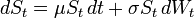
- The above equation has analytic solution:
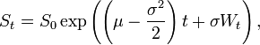
which is lognormal distribution (meaning - its logarithm is normaly distributed).
- Geometric_Brownian_motion (dS/S)
|
| 1.2 |
Calculus Refresher, Taylor Series and Transition Density Functions |
- Taylor series

- PDE = partial differential equation
V(S,t) - value of derivative
- A trinomial random walk
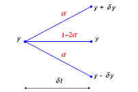
- Transition probability density function p(y,t,y',t')
- Fokker–Planck or forward Kolmogorov equation
(independent vars are t' and y')
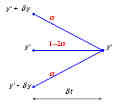 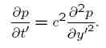
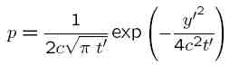
If starting point is no (0,0), but (y,t) - then:
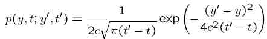
- backward Kolmogorov equation - independent vars are t and y:
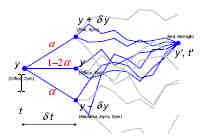 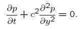
Note: term "similarity solution" is used when we are trying to find a solution of an equation in some specific form (similar to something). For example, for diffusion equation the similarity solution may be in the form form
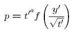
And then taking derivatives, substituting into the equation, and making reasonable suggestions - we get to the fundamental solution above (power = -0.5, and f() is exponent). |
| 1.3 |
Methods for Quant Finance:I |
- diff equations:
- exact equation - can be presented as complete differential dG
- Bernoulli equation: y' + P(x)y = q(x)y^n
- Homogeneous equation: dy/dx = f(x,y),
where f is homogenious: f(tx,ty) = (t^k)*f(x,y)
- Complex numbers:
exp(iz) = cos(z) +i*sin(z)
Moivres Theorem:
(cos(a) +i*sin(a))^n = cos(n*a) + i*sin(n*a)
|
| 1.4 |
Stochastic Calculus and Itô’s Lemma |
MGF = Moment Generating Function
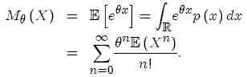
So the nth moment = E(X^n) is simply the coefficient in the above series, or n-th derivative of the above series at teta=0.
- Construction of Brownian Motion/Wiener Process
(it is a martingale, it is a Markov process).
- Functions of a stochastic variable F(X), mean square convergence dX^2 = dt, Itô’s Lemma for f(t,W):

- Stochastic Integration
- The Itô Integral (explicit, non-anticipatory).
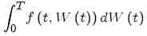 = 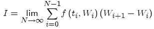
- Examples of popular Stochastic Di¤erential Equations |
| 1.5 |
From VBA to C++ Workshop |
Using VBA in Excel, using ExcelDNA to build Excel add-ins, also translating VB code into C++ to run externally. |
| 1.6 |
Introductory Trading Simulator |
|
| 1.7 |
Simulating and Manipulating Stochastic Differential Equations |
- Using Itˆo’s lemma to manipulate stochastic differential equations. We will describe the change in option price V(S), where the underlying S follows geometric Brownian motion (aka EMB = Exponential Brownian Motion). Specificly when V(S)=log(S).
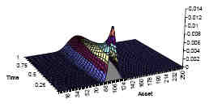
- Continuous-time stochastic differential equations as discretetime
processes. Simulating random walk - method Euler:
S(i+1) = S(i)(1+mu*dt+σ*fi*sqrt(dt))
- Simple ways of generating random numbers in Excel:
-- normsinv(rand()), or (sum(rand()) - 6)
Other random walks: Ornstein-Uhlenbeck process (mean-reverting random walk), Vasicek model:
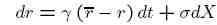
- Correlated random walks (fi1=r1; fi2 = p*r1 + sqrt(1-p*p)*r2;) |
| 2.1 |
Portfolio Management |
|
| 2.2 |
Products and Strategies |
|
| 2.3 |
Martingale Theory - Fundamentals |
ProbabilitySpace (SampleSpace, Filtration, ProbabilityMeasure)
SampleSpace = set of all outcomes.
Event = subset of SampleSpace
Union, Intersection, Difference ("\") of sets, Null set {0}
RandomVariable - assigns a value to each individual event
StochasticProcess S(t) =S(w)(t) - a sequence of random variables indexd by time
SamplePath - ...
Filtration - a σ-field (from Measure theory, sigma-algebra)
σ-algebra over a set X is a nonempty collection Σ of subsets of X (including X itself) that is closed under complementation and countable unions of its members. It is a Boolean algebra, completed to include countably infinite operations. The pair (X, Σ) is also a field of sets, called a measurable space.
P - ProbabilityMeasure - a type of "function", assigns probabilities to subsets (outcomes).
Probability: 0<=P<=1, P(all) = 1, sum of Pi = 1
PDF - Probability Density Function
CDF - Cumulative Distribution Function
E[..] - Mathematical Expectation
E[h(X)] = integral_lebesgue( h(x) dP )
Relation between expectation and probability - Indicator Function (=1 when x blong to subset, 0 otherwise).
Uncontidional Expectations, Conditional Expectations E[X|F]
Properties:
linearity,
Tower property E[E[X|G]|F] = E[X|F],
E[E[X|F]] = E[X].
If X is F-measurable, then X is known once we know F, then E[X|F] = X, and E[XY|F] = XE[Y|F].
If X is independent from F, then E[X|F] = E[X]
E[X|F] >=0
Jensen's Inequality: if f() is a convex function, then
f(E[X|F]) <= E[f(X)|F]
Measure Q is absolutely continuous with respect to measure P if for every subset if P(A) = 0, then Q(A) = 0 (impossibilities are preserved). It is denoted as Q<<P.
If Q<<P and P<<Q - then the two measures said to be equivalent.
Radon Nikodym Theorem: If measures P & Q share the same null sets, then there exists a random variable V such that for all subsets A
Q(A) = integral_over_A(VdP), where V=dQ/dP
For descrete distributions Q(A) = V(A)*P(A), V(.)=Q/P(.)
Technique - changing the measure to simplify the solution.
Multi-dmensional Ito Formula - n different Brownian motions and pairwise correlations.
Discrete Time Martingale: E[Mt+1|F] = Mt - no drift.
Supermartingale, submartingale =< or >= instead of "=".
Markov process - no memory, t+1 depends only on time t.
Levy - The Brownian Motion as a martingale: |Xt|2 - t is a martingale.
Ito integrals are martingales and vice versa, if M is a martingale - then exist a function such as M = Mo + Ito Integral of this function.
Properties of Ito Integrals - linearity, Ito isometry, Martingale.
Exponential Martingale: if S is a random walk, then find f(t)
so that M(t) = exp(St+f(t)) is a Martingale
|
| 2.4 |
Value at Risk and Volatility |
We say "1-day VaR at 95% confidence level". VaR is a probability estimate of max dollar amount which could be lost during a given time at given confidence level for normal (stable) market conditions. For stable conditions without drift:
VaR = N * S * F * σ * sqrt(dt)
where:
N - number of shares
S - stock price
σ - volatility expressed as fraction of stock price (for example, 0.15).
dt - (1/252) for 1-day.
F = number of standard deviations to reach certain degree of confidence.
(for example, F=1.28 for 90%, or F=1.64 for 95%, or F=2.33 for 99%.)
Introducing the drift:
VaR = N*S*(μ*dt - F*σ*sqrt(dt))
For a portfolio with many securities:
VaR = F*sqrt(dt)*sqrt(sum(sum(NiNjσiσjρijSiSj)))
VaR for derivatives - nonlinear. But for small moves and short times can be approximated. For larger movements need higher orders of approximation.
Delta-approximation - Δi - sensitivity of a portfolio to i-th asset.
VaR = F*sqrt(dt)*sqrt(sum(sum(ΔiΔjσiσjρijSiSj)))
Gamma - introduce asymmetry.
Simulations: Monte Carlo (using Normally distributed rand. numbers) or Bootstrapping (using historical data).
VaR doesn't satisfiy Artzner's criteria for being coherent:
1. r(x+y) <= r(x) + r(y) - VaR doesn't satisfy this.
2. if x<=y, then r(x) <= r(y)
3. r(kx) = kr(x)
4. r(x+c) = r(x) - c
VaR measure is not coherent.
The example of a coherent measure: "Expected Shortfall". This is average of all PnLs making the tail of interest.
Estimate volatility: σ2 = (1/N)(1/dt)ΣRi2 , where R -return of i-th asset.
Problem with this - too much memory (picks look like plateaus).
Better - use exponentially-weighted moving average estimate with parameter λ. |
| 2.5 |
Binomial Model (delta hedging, BS equation) |
a simple model for an asset price random walk (probab. p,q).
p=0.5+μ*sqrt(dt)/(2*σ)
The expected change is μ*S*dt, expected return is μ*dt,
standard deviation of returns is σ*sqrt(dt).
- delta hedging
construct a portfolio at time t consisting of one option and
a short position in a quantity Δ of the underlying - and choose Δ so that the value of the portfolio remains const.
• no arbitrage
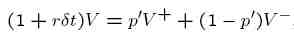
where p' - risk-neutral probability.
The option value at any time is the present value of the
expected value at any later time.
binominal trees: of asset prices, of option prices.
- risk neutrality
- limit dt->0 => Black-Scholes equation. |
| 2.6 |
Fundamentals of Optimization and Application to Portfolio Selection |
optimization - finding max/min; objective function f(x) & constraints gi(x)=bi.
use gradient vector and Hessian (matrix of 2nd derivatives).
method Lagrange - combine objective function and constraints into one Lagrangian function L(x,λ) = f(x) + Σλi(gi(x)-bi) - and find its max/min. Then we take 1st order partial derivatives by x and by λ. At extremum they should be zero - thus get (n+m) equations.
Another case - constraints are not "=", but "<=" (inequality). For this we use
Kuhn-Tucker conditions:
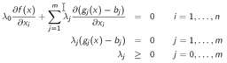
Markowitz world:
Portfolio of n assets: μ - vector of returns, w - vector of weights, Σ - covariance matrix:

Then portfolio return μπ = μTw , and portfolio variance σ2 =wTΣw .
Diagonalization of Covariance Matrix.
Portfolio optimization: minimize risk (portfolio variance) for given return constraint by finding the optimal weight vector w using Lagrange method.
Also we can solve another problem: find return m at which we can get min.variance.
Any efficient portfolio can be presented as a linear combinatin of 2 efficient portfolios: the global minimum variance portfolio + (Σ-1μ/B) portfolo.
Covariance of 2 portfolios.
Risk-free asset: return r, variance =0, correlation with other (risky) =0.
Tangency Portfolio: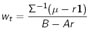 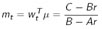 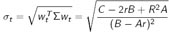
CAPM (Capital Asset pricing Model) derivation is based on 4 assumptions: 1) all investors want to max their utility from the investment; 2) all investors have common time horizon and predictions; 3) All assets can be bought and sold in unlimited amounts; 4) Any investment is infinitely divisible.
Sharpe-Lintner CAPM: μ - R1 = βM(μM - r)
where M - market (portfolio) |
| 2.7 |
Methods for Quant Finance: II |
Generalised Functions, δ-function as a limit of sequence of Gaussian functions.
Double Integration: area, changing variables, Jacobean, polar coordinates.
Fourier Transforms, take F() of both parts of the
heat equation.
Theory of Residues (Complex Analysis).
Singular points (while solving PDEs) - no Taylor expansion.
Regular Singular Point: x*p(x) and x*x*p(x) have taylor expansions.
Irregular Singular Point - all other points.
Fröbenius method - find solution of ordinary 2-nd order diff. equation as an infinite sum (Power Series solution, Indicial Equation).
|
| 3.1 |
Black-Scholes Model |
xxx
- http://en.wikipedia.org/wiki/Black%E2%80%93Scholes
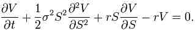
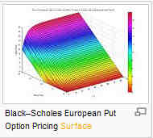
delta-hedging - dynamic hedging to remove risk. The rate should be same as no-risk rate (to remove arbitrage possibilities).
BS equation - linear, parabolic.
Note - drift didn't make it into the equation. ( !! ).
Final conditions (at expiry time T)
Variations - add dividends (paying continuously), currency options (r = r1-r2), commodity options (add cost of carry).
Solving the equation:
Do several transformations:
1. remove the rV
2. change t into (T-t)
3. use log(S) to get rid of S*d../dS situation
4. rotate coordinates to remove first derivative
General solution V(S,t) = discount_function * integral (payoff_function(S) * Green_function(S,t)dS)
Where Green_function is a "response" to a delta-function.
Binary options, european options, american options (ability to excercise early makes them more valuable), put/call parity.
Greeks:
delta
Δ = dV/dS - for delta-hedging
gamma Γ = d2V/dS2 - sensitivity of delta hedge ration to S
theta Θ = dV/dt - rate of change of option price with time
vega (zeta,kappa) = dV/dσ - sensitivity to vloatility
rho ρ = dV/dr - sensitivity to interest rate
Bermudian options (can be excersized only on certain days of the week)
Comparison between Kolmogorov Equation and BS equation.
|
| 3.2 |
Martingale Theory - Application to Option Pricing |
- http://en.wikipedia.org/wiki/Martingale_(probability_theory) -
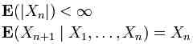
a martingale is a stochastic process (i.e., a sequence of random variables) such that the conditional expected value of an observation at some time t, given all the observations up to some earlier time s, is equal to the observation at that earlier time s. Example: Suppose Xn is a gambler's fortune after n tosses of a coin, where the gambler wins $1 if the coin comes up heads and loses $1 if the coin comes up tails. The gambler's conditional expected fortune after the next trial, given the history, is equal to his present fortune, so this sequence is a martingale.
Girsanov's Theorem: ____
Fundamental Asset pricing formula: ____
Black-Scholes ____
Feynman-Kac formula:
BS: dividends, time-dependent params, BS for options on futures. |
| 3.3 |
Advanced Greeks |
- http://en.wikipedia.org/wiki/Greeks_(finance)
|
Spot
Price (S) |
Volatility
(σ) |
Time to
Expiry (T) |
Risk-Free
Rate (r) |
| Value(V) |
Δ Delta |
v Vega |
Θ Theta |
ρ Rho |
| Delta(Δ) |
Γ Gamma |
Vanna |
Charm |
|
| Vega(v) |
Vanna |
Vomma |
DvegaDtime |
|
| Gamma(Γ) |
Speed |
Zomma |
Color |
|
| Vomma |
|
Ultima |
|
|
cost of carry can cause delta (dc/dS) to be higher than 1
|
| 3.4 |
Trading Simulator - Trading Equity Optins |
|
| 3.5 |
Understanding Volatility |
Volatility types: actual (local, instant), historical (realized), implied (for BS model), forward
Volatility Calibration: from market option prices => calculate implied volatility
Volatility Arbitrage: we assume that we know better than the market - thus have arbitrage opportunities.
Vega = dV/dσ - option price can change even when underlying doesn't move.
Bastard greek - sensitivity to a parameter
Increasing volatility will increase option value if Gamma is positive.
Volatility ~ sqrt(T)
Increasing volatility smoothes out curvature in asset direction, makes Gamma less "severe".
Volatility changes with time.
Avereging volatility - actually sum variances - and take sq.root.
Hedging with actual or Impleid volatility ?
Mark to Market
|
| 3.6 |
Monte Carlo and Finite Differences |
- simple case - European option, SDE is integrable, not path dependent - then you get payoff distribution analytically.
- general case - you have to model the walk going forward. Euler method (primitive step-by-step numeric integration - not stable). dS = r*S*dt+σ*S*sqrt(dt)*φ (where φ is from standard normal distribution).
Errors - dt size, N (number of realizations) is limited (error ~1/sqrt(N)), random numbers are not independent and/or normal.
Fast normal computations (sum 12 rand numbers - 6).
Example - calculations of European or asian options in Excel.
Explaining why US options is difficult - the model shoul make decisions about selling option at every step - for this it needs to know option value at each step.
xxx
xxx
- http://en.wikipedia.org/wiki/Leibniz_integral_rule
ddddd |
| 3.7 |
Martingales and PDEs: Which, when and why Part I |
Show how 3 approaches (binomial model, PDE, martingale) give the same result.
Pricing an option using binomial model.
CRR implementation of binomial model (Cox, Ross and Rubinstien) - converges to geometric brownian motion and leads to Black-Scholes PDE.
In the Black-Scholes setting, the no-arbitrage approach
and the martingale measure approach are strictly equivalent!
Complete market = a market in which we have
enough tradeable instruments to perfectly hedge all of the risk(s)
of the derivative we are intending to price.
|
| 4.1 |
Fixed Income Products and Analysis |
bonds, coupon, zero-coupon bonds, interest rate, floating rate bonds (LIBOR), FRA (Forward Rate Agreement), STRIPS, Amortization, Callable bonds.
Swaps - huge market
Interest rate swap (exchange fixed to floating rate).
Swap curve
swap prices determine the bonds yield curve.
Callable /puttable swaps
Extendible swaps,
Index amortizing rate swaps
Currency swaps
Modeling Interest Rates:
1. deterministic
2. Black 1976
3. Stochastic spot rate (Vasicek, Hull & White)
4. Multi-Factor (more sources of randomnes, spot and long-term)
5. HJM (Heath, Jarrow, Morton) - evolution of whole curve, non-markov, computer-simulation.
6. LMM (LIBOR Market Model - correlated random walks) - the most complex model.
Deterministic:
Yeld, current yield, Yield to Maturity (YTM = IRR = Internal Rate of Return)
Int.rate go up - bond prices go down.
Duration - measure of how much bond value (V) changes when interest rate changes: Macauley duration = -(1/V)*dV/dy
The higher duration - the more volatile the bond.
Duration = the average life of the bond.
Excel spreadsheet calc of YTM and Duration
Taylor expansion of V(y). Convexity = (1/V)*d2V/dy2.
Time-dependent Interest Rate
Forward Rates and Bootstrapping.
|
| 4.2 |
Stochastic Interest Rate Modelling |
Bonds, Interest Rate - many models (one-factor and multi-factor), popular 2-factor models, tractable models, affine models (affine = constant + linear).
Deriving pricing equation
SDE - Stochastic Differential Equation
r- interest rate, random variable (1-factor model - SDE of a random walk of r).
r is an underlying asset (like S in equities). Bond is a derivative of r with expiring = maturity.
spot rate - yield at a very short time (in practice - 1 month),
dr = u(r,t)dt + w(r,t)dX
Vasicek model: u = (η - γr), w=σ
Cox_Ingersoll_Ross model: u = (η - γr), w=σ*sqrt(r)
Derivation of pricing SDE - similar to B.S., but as r is not a traded, we can not use it to hedge while creating risk-free portfolio. The trick - hedge a bond with a bond of different maturity.
Π = V1 - ΔV2. To remove randomness: Δ = (dV1/dr)/(dV2/dr).
Using Ito and the above expression for Δ, we separate variables of V1 one one side, and V2 on the other. They should be equal regardless of which bond / maturity we use => so they shold be equal to some universal a(r,t) which represent drift:
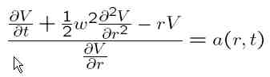
We write a() as:

where:
w - volatility
λ - "market price of risk"
u - drift
(u - λw) - risk neutral drift (or risk adjusted drift)
dr = (u - λw)dt + wdX - risk neutral spot rate SDE
Then we get BPE (Bond Pricing Equation) (similar to BS equation for equities):
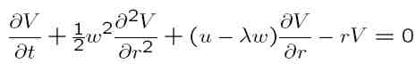
Final Condition for a zero-coupon bond is V(r,T) = 1.
Similar to equities - the value of derivative is a risk-neutral expectation of the present value of the payoff:

Tractable models - SDE with closed-form solutino (for example, in a form Z=exp(A-rB)).
Examples of models:
- Vasicek - dr = (η - γr)dt + sqrt(β)dX, where w = sqrt(β). Solution in the form exp(A(t)-rB(t)
- Cox, Ingersoll & Ross - dr = (η - γr)dt + sqrt(αr)dX. Solution againin the form exp(A(t)-rB(t)
- Ho & Lee - dr = η(t)dt + sqrt(β)dX, where drift is time dependent (for calibration), and volatility is constant.
Solution in the form: V(r,t;T) = exp(A(t)-rB(t)
The expression for A(t) contains integral of η(t).
We can chose η(t) so that output of the model will == market prices (Yield-curve fitting).
This was the first "no-arbitrage" model of the term structure of interest rates.
- Hull & White - similar to Vasicek and CIR, but parameters are made time-dependent. This allows to fit yield curve.
- etc.
A more general model:
- drift = (η(t) - γ(t)r) - this is mean reversion
- w(r,t) = sqrt( α(t)r + β(t) ) - we can assure that r is positive (> -β/α)
Solution is still in form V(r,t) = exp(A(t)-rB(t)).
========= Multi-factor interest rate modeling
dr = udt + wdX1
dl = pdt + qdX2 - where l may be another interest rate, a long rate, volatility of spot rate, etc. etc.
E[dX1+dX2] = ρdt
V = V(r,l,t)
As we have 2 randomnesses - we need 2 hedges to eliminate risk. The pricing SDE will have derivatives by t,r,l.
Multi-factor models:
- Brennan and Schwartz:
dr = (a1+b1(l-r))dt + σ1*r*dX1 - mean-reverting to l
dl = l*(a2-b2*r+c2*l)dt + σ2*r*dX2 - has its own drift
- Fong and Vasicek:
dr = a(rm-r)dt + sqrt(ξ)*dX1 - mean-reverting to rm
dξ = b*(ξm - ξ)dt + c*sqrt(ξ)*dX2 - volatility
- Longstaff and Schwartz:
dx = a(xm- x)dt + sqrt(x)*dX1
dy = a(ym- y)dt + sqrt(y)*dX2
r = cx + dy
|
| 4.3 |
Calibration and data Analysis |
Theorietical yield curve vs market yield curve. Calibration (fitting of the yield curve).
Ho & Lee: dr = η(t)dt + c
dX
Knowing η(t) we find Z(r,t;T). Inverse problem - we know Z from market - find η(t). That's calibration.
Another example - Hull & White's extension of Vasicek: dr = (η(t) - γr)dt + c dX
In real life when finding η(t) we make some assumptions, for example that it doesn't depend on price, or it is pricewise linear, etc.
how to analyze short-term interest rates to select the best model
dr = u(r,t)dt + w(r,t)dX
Z(r,t;T) = exp(A(t,T)-rB(t,T))
| Model |
u(r,t) - λ(r,t)w(r,t) - risk-adjusted drift
(where λ(r,t) - market price of risk). |
w(r,t) |
| Vasicek |
a - br |
c |
| CIR |
a - br |
c*sqrt(r) |
| Ho & Lee |
a(t) |
c |
| Hull & White I |
a(t) - b(t)r |
c(t) |
| Hull & White II |
a(t) - b(t)r |
c(t)*sqrt(r) |
| General affine |
a(t) - b(t)r |
sqrt(c(t)r-d(t)) |
How to deduce spot-rate model from data.
(1) find from data how volatility depends on r: w(r)
(2) examine the steady-state PDF for the spot rate => find drift rate u(r)
(3) slope of yield curve =>
λ(r)
The volatility structure - usually in the form ν*rβ
We find the β which makes the best fit.
Note - It is difficult to model the λ(r) due to big errors.
Forward rate vs spot rate:
Forward rate curve = expected future path of the risk-adjusted spot rate.
- http://en.wikipedia.org/wiki/Forward_rate - forward rate is the future yield on a bond. It is calculated using the yield curve. For example, the yield on a three-month Treasury bill six months from now is a forward rate.
The general formula used to calculate the forward rate is:
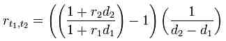
Where
r1,2 is the forward rate between term t1 and term t2,
d1 is the time length between time 0 and term t1 (in years),
d2 is the time length between time 0 and term t2 (in years),
r1 is the interest rate for the period time 0 to term t1 ,
r2 is the interest rate for the period time 0 to term t2 ,
In order to extract the forward rate, one needs the term structure of interest rates = yield curve.
|
| 4.4 |
Heath Jarrow and Morton Model |
HJM - model F(t,T) - forward rate curve.
dF(t;T) = m(t,T)dt + ν(t,T)dX
where m(t,T) = ν(t,T) * IntegraltT ν(t,s)ds
Monte-Carlo simulations: simulate evolution of the whole curve; calculate cashflows under each evolution; discount cashflows at the realized rate r(t) - get expected present value for this realization. Repeat the cycle.
Problems: calculations are slow. Also as the process is non-Markov, trees become "bushy" (forward curve after up-down movement is not the same as after down-up movement).
Musiela parametrization : ν(t,T) = νm(t,T-t)
Multi-factor HJM:
dF(t;T) = m(t,T)dt + Σνi(t,T)dXi
Spot rat process: r(t) = F(t;t). Non-Markov nature of HJM - dependence on history (path-dependent).
Comparison of HJM model and Ho & Lee:
dr = η(t)dt + cdX
dF(t,T) = -c2(T-t)dt +cdX
Two main ways to use HJM:
1) choose volatility structure νi(t,T) to be nice to make a tractable model (Markov)
2) use 'classical' popular spot-rate models.
Yet another way - to choose volatility structure to match the data.
Principal Component Analysis (PCA) - we take historical data for forward rates for several years, calculate covariances between rates of different maturities - get a 10x10 symmetric covariance matrix, find eigen vectors/values - essentially find common movements in the rates. Those eigenvectors sorted by eigenvalues starting from largest ones are called principal components. In practice ~95% of the dynamics of the F(t) can be explained by first 2 components.
|
| 4.5 |
Probabilistic methods for interest rates |
Martingales and Fixed Income Valuation
under Physical measure P: dr(t) = μ(t,r)dt + σ(t,r)X(t), r(0) = r
money-in-the-bank process A(t) = exp(Integral0t r(s)ds)
B(t,T) - zero-coupon bond (ZCB) which pays 1 at maturity T
zero-coupon market - all bonds B(t,T) for t<=T <= maxT
Each bonds => sequence of coupons, and coupons => ZCBs.
Equivalent Martingales Measures Q for ZCB Market:
Z*(t,T) = B(t,T)/A(t) - should be a martingale for any maturity T.
Note - there may be zero, one, or many equivalent measures. (page18)
============
fundamental asset pricing formula for bonds
dynamics of bond prices
Pricing forward contracts
The forward (martingale) measure
Fundamental asset pricing formula for derivatives on bonds
Pricing of European call on a zero-coupon bond.
Rights and wrongs of short-term interest rate models:
- bad:
if we start with rate to calc bonds - we get "fudge function". So it may be better to start with bond dynamics first - and then deduce dynamics of interest rates (HJM class of models).
- satisfactory:
--the forward measure, term structure of forward rates. Interpretation of Radon-Nikod'ym derivative lambda as an intemporal no-arbitrage condition is particularly intuitive and elegant.
-- As long as bonds follow geometric dynamics, the value of the derivative will be of the same form (irrespecive of the model).
Next - forward rates models: Heath, Jarrow & Morton (1992), Brace, Gatarek & Musiela (1997).
Good about F.R.Models:
- they start with nice geometric dynamics for Zero-Coupon Bonds - then deduce term structure of forward rates.
- they encompass all existing interest rate models
- - you can use then to manage the risk of anything (short and long term).
Problems with F.R.Models:
- non-Markov. But at certain assumptions may be Markov.
- complex (math)
- not clear which form of model to use
|
| 4.6 |
The Libor Market Model |
|
Α α Alpha - Ν ν Nu
Β β Beta - Ξ ξ Xi
Γ γ Gamma - Ο ο Omicron
Δ δ Delta - Π π Pi
Ε ε Epsilon - Ρ ρ Rho
Ζ ζ Zeta - Σ σ ς Sigma
Η η Eta - Τ τ Tau
Θ θ Theta - Υ υ Upsilon
Ι ι Iota - Φ φ Phi
Κ κ Kappa - Χ χ Chi
Λ λ Lambda - Ψ ψ Psi
Μ μ Mu - Ω ω Omega
| 5.1 |
Structural Models |
xxx |
| 5.2 |
Intensity Models |
|
| 5.3 |
Introduction to Credit Derivatives |
|
| 5.4 |
Credit Default Swaps |
|
| 5.5 |
Collateralized Debt Obligations |
|
| 5.6 |
Advanced Credit Derivatives |
|
| 6.1 |
Time Series in Financial Markets |
xxx |
| 6.2 |
Exotic Options |
|
| 6.3 |
Incomplete Markets: Jump Diffusion and Stochastic Volatility |
|
| 6.4 |
'Advanced' Volatility Modeling in Complete Markets |
|
| 6.5 |
Further Monte Carlo |
|
| 6.6 |
Martingales and PDEs: More "Which, When and Why" Part II |
|
| 6.7 |
Further Finite Difference Methods |
|
| 6.8 |
Discrete Hedging and Transaction Costs |
|
| 6.9 |
Correlation Sensitivity and State Dependence |
|
- http://en.wikipedia.org/wiki/Hedge_(finance)
- http://en.wikipedia.org/wiki/Pairs_trade
- http://en.wikipedia.org/wiki/Algorithmic_trading
- http://en.wikipedia.org/wiki/Volatility_smile - the volatility smile is a long-observed pattern in which at-the-money options tend to have lower implied volatilities than in- or out-of-the-money options. The pattern displays different characteristics for different markets and results from the probability of extreme moves. Equity options traded in American markets did not show a volatility smile before the Crash of 1987 but began showing one afterwards.
Modelling the volatility smile is an active area of research in quantitative finance. Typically, a quantitative analyst will calculate the implied volatility from liquid vanilla options and use models of the smile to calculate the price of more exotic options.
A closely related concept is that of term structure of volatility, which refers to how implied volatility differs for related options with different maturities. An implied volatility surface is a 3-D plot that combines volatility smile and term structure of volatility into a consolidated view of all options for an underlier.
Beta - Portfolio's Beta coefficient = correllation with the market = Covar(Ri,Rm)/Var(Rm).
0 - not correllated, positive - follows the market, negative - inversely follows the market).
Sharpe Ratio S = (R - Rf)/σ, where R - return, Rf - benchmark return, σ - standard deviation of the asset
Jensen's alpha = R - [RFR + Beta * (MR - RFR)]
where R - portfolio return, RFR (Risk Free Rate) = rate of short-term treasuries, Beta - Portfolio's Beta, MR (Market Return) = return of a portfolio consisting of a weighted sum of every asset in the market, with weights in the proportions that they exist in the market
CAPM (Capital Asset Pricing Model) - a model for pricing an individual security or a portfolio. SML (Security Market Line) - how Asset Return depends on Beta.
implied volatility - the value of volatility which makes the model price to fit the current market price. i.e. if you use it in a particular pricing model, the price of the option predicted by this model should be the same as the current market price.
| implied volatility |
the value of volatility which makes the model price to fit the current market price. i.e. if you use it in a particular pricing model, the price of the option predicted by this model should be the same as the current market price.
If we imply a BS model where σ = const, and have S, X, r, (T-t), and current V - then we can compute implied volatility using iterative procedure (we can't simply invert the formulas).
In real life σ for options is different for different expirations and different strike prices:
σ = σ(t,S).
Thus surfaces are used.
- http://en.wikipedia.org/wiki/Implied_volatility
Implied volatility - hypothetical volatility to be used from current time until maturity of the option.
Historical volatility - real volatility data from the past. |
| volatility smile |
graph of implied volatility of the option depending on the strike price tend to have a form of a smile, that is : At-the-money options tend to have lower implied volatilities than in- or out-of-the-money options.
- http://en.wikipedia.org/wiki/Volatility_smile
Combining volatilty smiles for different maturities we get a volatility surface (see below) |
| volatility skew |
For some markets (such as equity options) the graph may be a downward sloping (instead of a smile) - then the term "volatility skew" is used. |
| volatility frown |
inverted smile |
| Implied Volatility Surface |
We can calculate implied volatility for each strike price E and time to expiration T (using market prices for S,V and BS approximation). This will give us an implied volatlity surface - ploted as as a function of both E and T.
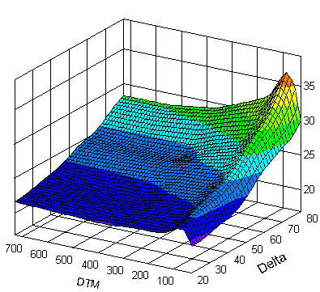 |
local volatility model
|
- in local volatility model the volatility is considered as a function of (S,t): st = s(St,t). This model is used to calculate values of exotic options which are consistent with observed prices of vanilla options.
- in stochastic volatility model the volatility is considered as a random process with a randomness of its own (and doesn't depend on price and time to expiration). This helps to better model derivatives, although doesn explain smiel and skew (which indicate that implied volatility does tend to vary with respect to strike price and expiration).
- http://en.wikipedia.org/wiki/Local_volatility
- http://en.wikipedia.org/wiki/Stochastic_volatility
Two ways to do estimates:
1. from actual historical volatility -> to implied volatlity
2. from implied volatility -> to local volatility.
For second approach Paul Wilmott has derived a formula (assuming that there is continuous market data on V=V(S,T)). The resulting expression gives big errors for far in/out the money options (because both numerator and denominator become small). To reduce errors, he provides another formula deducing local volatility from implied volatility.
In practice we have a limited set of descretely-spaced call prices. Thus the surface for implied/local volatility is presented by a set of dots. We fit this set with a surface using some model (parametrization) and some fitting procedure. A simple model:
σimp(E,T) = a(T)(E-S*) + b(T)
|
| ATM, OTM, ITM |
At The Money, Out of The Money, In The Money |
| ATMF |
ATM Forward. Forward price is a price for delivery in future, whereas a spot price is a price for immediate delivery. For instance, if the spot price for USD/JPY is 120, and the forward price one year hence is 110, then a call struck at 110 is ATMF but not ATM. |
| volatility convexity |
|
| volatility surface dynamics |
|
| first and higher order risk measures of derivatives positions |
|
| volatility trading strategies |
|
| parametric volatility fitting process |
|
| data scrubbing |
error correction technique (remove spikes) |
| volatility approximation concepts for illiquid listed options |
midpoint |
| treatment of deep OTM volatility |
|
| Use of analytic libraries for volatility fitting |
implied_volaility |
| fast calculation of parametric implied volatility surfaces |
parametric statistics (normal, log-normal)? |
| Volatility Surface parametrization |
Overfitting is bad - loses valuable info. |
| Volatility Trading |
VIX Option -
A volatility option is a call or put option where the underlying asset is a volatility index;
Volatility Index is a compilation of implied volatilities of a series of call and put options. Typically a volatility index will take the implied volatilities from a stock index, however, more sophisticated volatility indices will take the implied vols from the component stocks that make up the index.
VIX - the most recognized volatility index - based on S&P 500, traded on CBOE (Chicago Board of Options Exchange). Another one - VXO - based on S&P 100.
VRO - the CBOE listed futures on the VIX, probably the most actively traded contract on the exchange.
VXN - NASDAQ volatility index.
VXD - Dow Jones volatility index.
Trading strategies bullish on volatility - long straddle, long strangle, short condor and short butterfly - neutral trading strategies that are bullish on volatility profit when the underlying stock price experiences big moves upwards or downwards.
Trading strategies bearish on volatility - short straddle, short strangle, ratio spreads, long condor and long butterfly - neutral trading strategies that are bearish on volatility profit when the underlying stock price experiences little or no movement.
Butterfly - buy ATM call, buy OTM call, sell 2 ITM calls.
Condor - sell OTM call, buy call with higher strike price, sell OTM put, buy put with lower strike price.
Straddle - buy call and put with same strike and expiration.
Strangle - buy OTM cal and OTM put with the same expirations. Similar to the straddle, but with different strike prices.
Ratio-spread - buy N1 options, sell N2 other options. Same underlying, same (usually) expiration, but different strike price. |
| Historical volatility |
Estimate volatility as standard deviation of ln(Si/Si-1) , that is - logarithm of relative price |
| |
|
- Christian Kahl - Modelling and simulation of stochastic volatility in finance, 2007 (book based on his thesis).
- Ornstein-Uhlenbeck model - mean-reverting process
- Affine diffusion stochastic volatility models - characteristic function of underlying esset's marginal distribtion s known in clsed form. Example - Heston Model :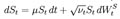, where 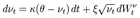
- Monte-Carlo
- Path-construction methods - to generate sample paths using some kind of random walk.
- Fractional Fourier transform (FRFT) for spectral path construction (FRFT is a Fourier transform to the n-th power where n need not be an integer).
GARCH = Generalized Auto-Regressive Conditional Heteroskedasticity - modeling of tme series to explain clustering (current changes are function of changes in the previous term(s)).
| yield |
The yield of a debt instrument is the overall rate of return available on the investment. |
| yield to maturity (YTM) |
YTM (aka Redemption Rate, or Internal Rate of Return (IRR) - an estimation of overall interest rate earned by an investor who buys the bond today at the market price, assuming that the bond will be held until maturity, and that all coupon and principal payments will be made on schedule - and will be reinvested (at the same rate). The YTM can be expressed in terms of anual (Annual Percentage Rate - APR), or semi-annually.
YTM doesn't take into account taxes or dealing costs. If YTM is equal to CR (coupon rate) - then the bond is selling "at par", if YTM > CR - selling at a discont, YTM < CR - selling at a premium
- http://en.wikipedia.org/wiki/Yield_to_maturity |
| yield curve |
graph of interest rate (or cost of borrowing) vs time to maturity
- http://en.wikipedia.org/wiki/Yield_curve
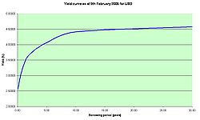
(also called "term structure of interest rates"). |
Expected value: for example, if the probability of receiving $1 is 50%, the value is $0.50 - this is called 'expected value'.
Pricing: take expected payoff value, discount back in time to today's date, adjust for risk.
Two ways to price an asset:
- Take an expected value - and adjust for risk. This is modeled using real world (physical) probabilities.
- "Risk-neutral pricing" - adjust the probabilities of future outcomes so that they incorporate the effects of risk. Use these virtual probabilities to calculate expectation. Those adjusted virtual probabilities are called "risk-neutral probabilities".
Adjusting the probabilities in the 2nd method is a martingale measure transformation (from physical measure "P" to risk-neutral one "Q"). This transformation is possible if there are no arbitrage opportunities. If the markets are complete, the risk-neutral measure is unique.
So, Risk-neutral measure = Equivalent martingale measure = Q-measure - a probability measure which allows us to calculate the value of assets in a simple way. Namely, we simply take the expected value of the future payoff - and discount it at the risk-free rate. No risk-adjustment is needed.
Under the risk-neutral measure all assets have the same expected rate of return - the risk-free rate (or short rate). This is the main benefit of using Q-measure: once risk-neutral probabilities are found, every asset can be priced by simply taking its expected payoff. This is easier that using the real-world physical probabilities (P-measure) - where risk is different for every security.
http://en.wikipedia.org/wiki/Risk-neutral_measure
Risk-neutral demonstrates that when pricing some assets, the real world probabilities assigned to future cash flows are irrelevant.
The fundamental assumption behind risk-neutral valuation is to use a replicating portfolio of assets with known prices to remove any risk. The amounts of assets needed to hedge determine the risk-neutral probabilities.
Forward price = delivery price at future time T. F = S*exp(r*(T-t)), where r - rate, S - current price. Using Ito we get: dF = (μ-r)Sdt + σSdW.
Similar using Ito to find that function G(S,t) = ln(S) follows similar diff. equation. And solution is : ln(S(T)) = ln(S(t)) + K*N(m,s),
where K - some coefficient, N - normal distribution, m=(μ-σ2/2)(T-t) - mean value, and s = σ*sqrt(T-t) - standard deviation.
Put-Call Parity: http://en.wikipedia.org/wiki/Put-call_parity : relationship between call and put (to avoid arbitrage opportunities) : buying a call and selling d shares of stock = buying a put and buying 1 − d shares of stock.
Also implied volatility of calls and puts must be identical (if no dividends or other complications).
Methods for option pricing: http://en.wikipedia.org/wiki/Option_pricing
- Black-Scholes - analytic solution (not very precise)
- Methods approximating the stochastic process:
- Binomial procedure - 1) Build S prices tree going forward; 2) Fill-in option-prices going backward in time.
- Monte-Carlo Simulation - randomly sample stock process to obtain distribution at maturity. Then discount to present time using risk-free rate.
- Jarrow-Rudd approximation - similar to Monte-Carlo. A distribution is obtained. The price is computed as the sum of Black-Scholes value and a series of adjustments which depend on difference between moments of lognormal distribtion and actual distribution.
- Methods approximating the PDE:
- Finite Difference methods - (
- Numerical Integration (M.Parkinson) - similar to binomial, but the option is written as an integral, which computed numerically.
Other approaches include:
dS = μSdt + σSdW
V = V(S,T) - value of the option
dV = ... (lemma Ito)
Compose a portfolio Π = V - S(dV/dS) , that is we constantly trade (buy/sell) stock to hold the amount of stock equal to partial derivative of V over S at all times. This portfolio is called "delta-hedged". The instantenous profit/loss for this portfolio contains no dW in it. So it is riskless, and its return should be equal to rΠdt, where r - risk-free rate of return.
So profit/loss using Ito's lemma = rΠdt
This gives us BS equation.
http://en.wikipedia.org/wiki/Black%E2%80%93Scholes
Note: BS equation doesn't have "μ" - it drops out during the derivation.
Warren Buffett believes the BS model is wrong:
http://seekingalpha.com/article/126614-improving-the-black-scholes-model - In his recent report to the shareholders of Berkshire Hathaway
(BRK.A, BRK.B), Warren Buffett explains why he’s buying
and selling the very derivative securities he notoriously
lambastes as weapons of financial mass destruction. It’s simple really. He thinks the Black Scholes model is wrong,
and lots of these derivatives are mispriced as a result. The guy’s got a point. Under the Black Scholes Model, the longer
the time to exercise, the higher the price of the option. That makes
some sense in the short term, but suppose you are trying to price ...
Intuitive comparison between Riemann and Lebesgue integration:
Problem: find a mountain's volume (above sea level).
The Riemann-Darboux approach: Divide the base of the mountain into a grid of 1 meter squares. Measure the altitude of the mountain at the center of each square. The volume on a single grid square is approximately 1x1x(altitude), so the total volume is the sum of the altitudes.
The Lebesgue approach: Draw a contour map of the mountain, where each contour is 1 meter of altitude apart. The volume of earth contained in a single contour is approximately that contour's area times its height. So the total volume is the sum of these volumes.
In other words, the difference between the Riemann and Lebesgue approaches is that to compute the Riemann integral of f(x) on x in [a, b], we subdivie [a,b] into many small pieces, whereas in the Lebesgue method we partition the range of the function f(x).
Also note that Lebesgue approach can be applied to infinite and/or noncontinuous sets.
http://en.wikipedia.org/wiki/Lebesgue_integration
xx
Vasicek Model - used to model interest rates.
http://en.wikipedia.org/wiki/Vasicek_model
Cox–Ingersoll–Ross model (or CIR model) describes the evolution of interest rates.
http://en.wikipedia.org/wiki/Cox-Ingersoll-Ross
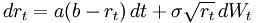
Black Scholes model is based on a traditional diffusion process, with small, continuous, random movements.
Jump process - a stochastic process that has large discrete jumps, rather than small continuous movements.
Jump diffusion - hybrid of small and large jumps (Robert C. Merton)
dSt = St-dt + St-dZt + St-dJt
- Robert C. Merton (MIT), John Carrington Cox (MIT), Stephen Ross ( MIT)
- Nassim Nicholas Taleb (Black Swan)
Black Swan Principles:
1. What is fragile should break early while it is still small. Nothing should ever become too big to fail.
2. No socialisation of losses and privatisation of gains.
3. People who were driving a school bus blindfolded (and crashed it) should never be given a new bus.
4. Do not let someone making an “incentive” bonus manage a nuclear plant – or your financial risks.
5. Counter-balance complexity with simplicity.
6. Do not give children sticks of dynamite, even if they come with a warning.
7. Only Ponzi schemes should depend on confidence. Governments should never need to “restore confidence”.
8. Do not give an addict more drugs if he has withdrawal pains.
9. Citizens should not depend on financial assets or fallible “expert” advice for their retirement.
10. Make an omelette with the broken eggs.
The Feynman–Kac formula links PDE and stochastic processes. The idea is that the solution of a PDE may be found as an expectation of a stochastic process (using random walk and Monte-Carlo).
http://en.wikipedia.org/wiki/Feynman-Kac
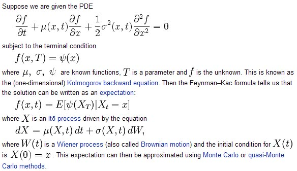
Girsanov theorem tells how stochastic processes change under changes in measure (especially when we convert to risk-neutral measure). http://en.wikipedia.org/wiki/Girsanov_theorem . It enables the key result that if Q is a measure absolutely continuous with respect to P, then every P-semimartingale is a Q-semimartingale.
Semimartingale - a process which can be presented as a sm of a local martingale and an adapted finite-variation process:
Xt = Mt + At
http://www.wilmott.com/messageview.cfm?catid=19&threadid=5157 - good discussion
Large Deviations Theory - asymptotic behaviour of remote tails of sequences of probability distributions.
http://en.wikipedia.org/wiki/Large_deviations_theory
Importance sampling - estimating properties of a particular distribution, while only having samples generated from a different distribution rather than the distribution of interest.http://en.wikipedia.org/wiki/Importance_sampling
BLAS - Basic_Linear_Algebra_Subprograms - matrix & vector operations. May be processor-specific libraries such as ATLAS and MKL, or dedicated hardware (designed primarily for graphic accelerators
and signal processing).
Level-3 BLAS has the potential of making special functions and Monte-Carlo methods obsolete in Finance.
Brownian Bridge - Brownian motion pinned at both ends. http://en.wikipedia.org/wiki/Brownian_bridge .
For example, stochastic (Wiener-like) process B(t) such as B(0) = B(1) = 0. The expected value of the bridge is zero, with variance t(1 − t), implying that the most uncertainty is in the middle of the bridge, with zero uncertainty at the end-nodes. The covariance of B(s) and B(t) is s(1 − t) if s < t. The increments in a Brownian bridge are not independent.
Path Construction (Monte Carlo) - a simulated discretised path of a standard Wiener process over a set of times t1,t2,...tn.
- Incremental - regular Wiener process
- Spectral - switch from time domain (t1,t2,...tn) into frequency domain, use Sobol numbers (quasi-random low-discrepancy sequences - http://en.wikipedia.org/wiki/Sobol_sequence - first introduced in 1967 by I.Sobol. Efficient Gray code implementation for generating Sobol numbers was proposed by Antonov and Saleev).
- Brownian bridge
Primitive Polynomial - an irreducible polynomial (greatest common divisor is 1). Can be used to generate pseudorandom bits.
http://en.wikipedia.org/wiki/Primitive_polynomial
For example, given the primitive polynomial x10 + x3 + 1, we start with a user-specified bit seed (it need not randomly be chosen, but it can be). We then take the 10th, 3rd, and 0th bits of it, starting from the least significant bit, and xor them together, obtaining a new bit. The seed is then shifted left and the new bit is made the least significant bit of the seed. This process can be repeated to generate 210−1 = 1023 pseudo-random bits.
Halton sequence - a sequence of nearly uniformly distributed numbers that appear to be random. http://en.wikipedia.org/wiki/Halton_sequence
For example, we for base 2, we start by dividing the interval (0,1) in half, then in fourths, eighths, etc, which generates the sequence like this: 1/2, 1/4, 3/4, 1/8, 5/8, 3/8, 7/8, 1/16, 9/16,... . Similarly we can generate a sequence for the base of 3: 1/3, 2/3, 1/9, 4/9, 7/9, 2/9, 5/9, 8/9, 1/27,... Then we can combine them to
When we pair them up, we get a sequence of points in a unit square: (1/2, 1/3), (1/4, 2/3), (3/4, 1/9), (1/8, 4/9), (5/8, 7/9), (3/8, 2/9), (7/8, 5/9), (1/16, 8/9), (9/16, 1/27).
Note: Even though standard Halton sequences perform very well in low dimensions, correlation problems have been noted between sequences generated from higher primes.
adapted process (or non-anticipating process) is one that cannot "see into the future", that is for every realisation and every n, Xn is known at time n.
cost of carry = the cost of "carrying" or holding a position. - http://en.wikipedia.org/wiki/Cost_of_carry -
- cost of interest paid on a margin account (for long position)
- cost of paying dividends (for short position)
- opportunity cost (cost of purchasing some other security rather than an alternative).
- Generally refers to risk-free interest rate of some instrument (say, money-market) minus any future cash flows of investment into a similar product with similar risk.
- Storage costs (should be added to the cost of carry for physical commodities such as corn, wheat, or gold.)
The cost of carry model expresses the forward price (or, as an approximation, the futures price) as a function of the spot price and the cost of carry.
The same model in currency markets is known as interest rate parity.
For example, a US investor buying a Standard and Poor's 500 e-mini futures contract on the Chicago Mercantile Exchange could expect the cost of carry to be the prevailing risk-free interest rate (around 5% as of November, 2007) minus the expected dividends that one could earn from buying each of the stocks in the S&P 500 and receiving any dividends that they might pay, since the e-mini futures contract is a proxy for the underlying stocks in the S&P 500. Since the contract is a futures contract and settles at some forward date, the actual values of the dividends may not yet be known so the cost of carry must be estimated.
CDO = Collateralized Debt Obligation - http://en.wikipedia.org/wiki/Collateralized_debt_obligation -a structured Asset-Backed Security (ABS). Value and payment come from portfolio of fixed-income underlying assets. CDOs are split into tranches by risk. CDOs do not reduce risk of underlying assets - just spread the risk.
CDS = Credit Default Swap. http://en.wikipedia.org/wiki/Credit_default_swap
Supposed to work like insurance. Buyer (a bank or a fund) buys protection from a seller by making regular payments to the seller. In case of a default, the seller is supposed to pay (like insurance). Problem - investors can buy and sell protection without owning any debt of the reference entity. These “naked credit default swaps” allow traders to speculate on debt issues and the creditworthiness of reference entities. Credit default swaps can be used to create synthetic long and short positions in the reference entity. [3] Naked CDS constitute most of the market in CDS. In addition, credit default swaps can also be used in capital structure arbitrage.
Synthetic CDO (SCDO) = a CDO in which the underlying credit exposures are taken on using a CDS rather than by buying physical assets. http://en.wikipedia.org/wiki/Synthetic_CDO . A SCDO can be single tranche or fully distributed, balance sheet CDO or arbitrage CDOs. SCDOs generate income selling "insurance" against bond defaults in the form of CDSs, typically on a pool of 100 or more companies.
Swap - http://en.wikipedia.org/wiki/Swap_(finance) - a derivative contract when two counterparties agree to exchange one stream of cash flows against another stream. These streams are called the legs of the swap.
- Interest rate swaps. Ex:exchange of a fixed rate loan to a floating rate loan.
- Currency swaps - exchanging principal and fixed rate interest payments on a loan in one currency for principal and fixed rate interest payments on an equal loan in another currency
- Commodity swaps (mostly in oil):a floating (or market or spot) price is exchanged for a fixed price over a specified period.
- Equity Swap - underlying asset is a stock, a basket of stocks, or a stock index.
- Credit default swaps - a swap contract in which the buyer of the CDS makes a series of payments to the seller and, in exchange, receives a payoff if a credit instrument - typically a bond or loan - goes into default (fails to pay).
- Other variations:
- Total Return Swap - party A pays the total return of an asset, and party B makes periodic interest payments.
- Swaption - option on a swap (right to enter into a swap in the future).
- variance swap - one leg makes fixed payments, another leg makes payments which depend on the real volatility (variance).
- constant maturity swap (CMS) - allows the purchaser to fix the duration of received flows on a swap.
- amortising swap - usually an interest rate swap in which the notional principal for the interest payments declines during the life of the swap, perhaps at a rate tied to the prepayment of a mortgage or to an interest rate benchmark such LIBOR.
The foreign exchange market (forex, FX, or currency market) is a worldwide decentralized over-the-counter financial market for the trading of currencies. Typical transaction is exchanging 2 bags of money in different currencies. Each party purchases a quantity of one currency by paying a quantity of another currency.
FX operates 24 hours a day except weekends, i.e. trading from 20:15 UTC on Sunday until 22:00 UTC Friday.
Average daily turnover ~ 4 trillion $. About half of this is in foreign exchange swaps.
In comparison, the daily trading volume for US bond market is ~0.8 trillion (~500 bllion - treasures, ~250 - mbs agencies, ~75 - Fed.Agencies' securities, 23 minucipal, 23 corporate).
Forex swap consists of 2 legs: a spot FX transaction, and a forward FX transaction. These two legs are executed simultaneously for the same quantity, and therefore offset each other. It is also common to trade forward-forward, where both transactions are for (different) forward dates.
By far and away the most common use of FX swaps is for institutions to fund their foreign exchange balances.
Once a foreign exchange transaction settles, the holder is left with a positive (or long) position in one currency, and a negative (or short) position in another. In order to collect or pay any overnight interest due on these foreign balances, at the end of every day institutions will close out any foreign balances and re-institute them for the following day. To do this they typically use tom-next swaps, buying (selling) a foreign amount settling tomorrow, and selling (buying) it back settling the day after.
The interest collected or paid every night is referred to as the cost of carry. As currency traders know roughly how much holding a currency position will make or cost on a daily basis, specific trades are put on based on this; these are referred to as carry trades.
by David Harper, CFA, FRM, CIPM
http://www.bionicturtle.com/learn/article/bivariate_normal_distribution_spreadsheet/
Drezner Approximation, John Hull's technical note #5
Α α Alpha - Ν ν Nu
Β β Beta - Ξ ξ Xi
Γ γ Gamma - Ο ο Omicron
Δ δ Delta - Π π Pi
Ε ε Epsilon - Ρ ρ Rho
Ζ ζ Zeta - Σ σ ς Sigma
Η η Eta - Τ τ Tau
Θ θ Theta - Υ υ Upsilon
Ι ι Iota - Φ φ Phi
Κ κ Kappa - Χ χ Chi
Λ λ Lambda - Ψ ψ Psi
Μ μ Mu - Ω ω Omega
{kind=link}